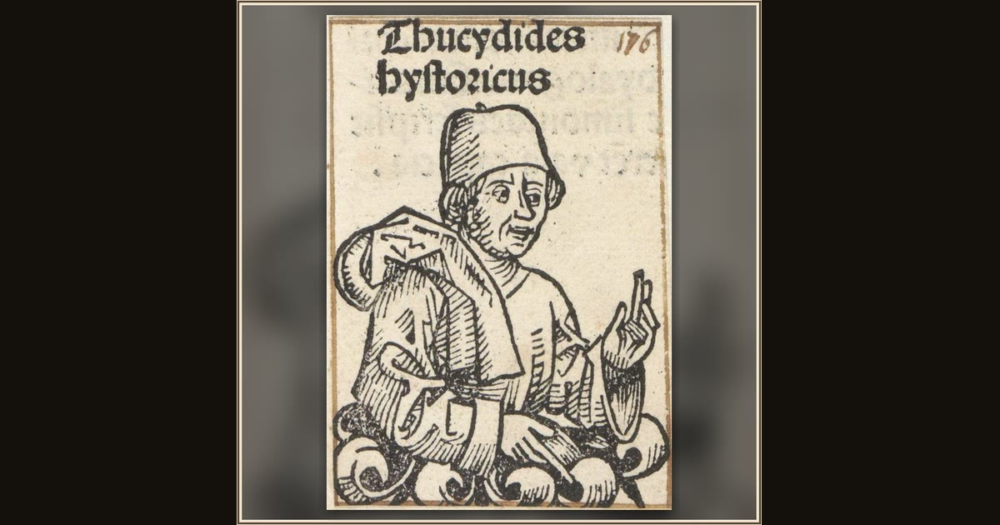

Thucydides
workshop of Michel Wolgemut; workshop of Wilhelm Pleydenwurff · 1493 · rijksmuseum
A labelled woodcut shows a seated figure identified as Thucydides. In this passage, the historian names himself as the general summoned from Thasos to help Amphipolis (4.104.4) Explore its place in Thucydides's History of the Peloponnesian War, Book IV, chapte